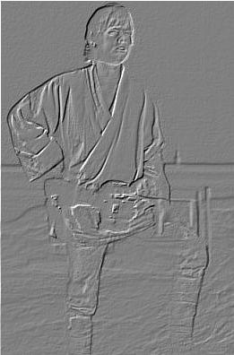
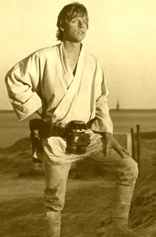
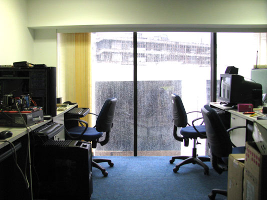
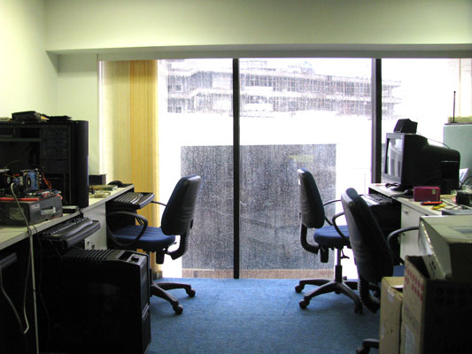

Adam Szczepañski


Przebieg æwiczenia i kszta³t sprawozdania
-
W sprawozdaniu powinien znaleŸ¼æ siê kod Ÿ¼ród³owy wraz z krótkim opisem implementacji i uzyskiwanymi wynikami.
-
Wyt³oczka - s³u¿y do tworzenia znaków wodnych na obrazie.
Wyt³oczkê uzyskuje siê poprzez porównanie kana³ów piksela z wartoœ¶ciami
jego lewego górnego s±siada. Za wszystkie kana³y piksela podstawia siê
maksymaln± z uzyskanych ró¿nic.
Wyt³oczka s³ó¿y najczêœciej do tworzenia tak zwanych znaków wodnych na zdjêciach. Efekt ten uzyskuje siê poprzez znalezienie ¶œredniej warto¶œci wyt³oczki, a pó¼Ÿniej dodawanie ró¿nic poszczególnych pikseli od œ¶redniej do wartoœ¶ci pikseli znakowanego obrazka.

-
Sepia - jest to "zbr±zowienie" i postarzenie obrazu. Najpierw
doprowadza siê obraz do odcieni szaroœ¶ci. Potem poszczególne kana³y
ustawia siê na:
r = r + sepiaDepth*2
g = g + sepiaDepth
b = b + sepiaIntensity
Gdzie sepiaDepth i sepiaIntensity to arbitralne parametry okre¶œlaj±ce intensywno¶œæ efektu. Poeksperymentujcie z nimi.

-
Efekt stereoskopowy - aby uzyskaæ go w najlepszej jako¶œci potrzebujemy dwóch obrazów.
 
Najprostrz± metod± nie wymagaj±c± okularów jest wy¶wietlanie ich odpowiednio szybko naprzemiennie.
Nastêpna metoda wynaga ju¿ zastosowania dwukolorowych okularów.
Mo¿liwo¶ci jest tu kilka, w zale¿no¶ci od efektu, który ma siê zamiar uzyskaæ.
Najprostrza to wyci±gniêcie czerwonego kana³u z jednego obrazka, niebieskiego z drugiego i wyzerowanie kana³u zielonego.
Dalej mo¿na zielony kana³ zastapiæ odcieniem szaro¶ci z jednego lub drugiego obrazka (albo ¶rednim odcieniem z obu).
Powy¿sze dwie metody daj± trójwymiar dla okularów czerwono-niebieskich.